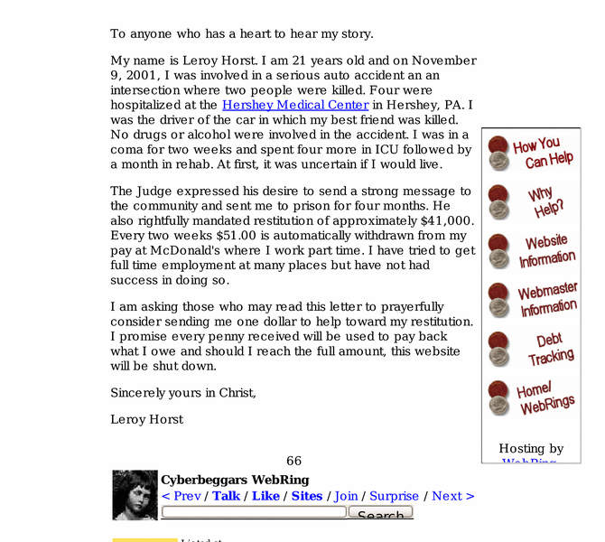

Previewing: Paying for a Tragic Accident Previewing: Paying for a Tragic Accident 
Use the left/right red arrow controls to navigate through this ring - Click the preview image to visit the member site.

In 2001 I was the driver in an accident that killed my best friend and an innocent second driver. Read my story, pray for me, and see if you can help.
Paying for a Tragic Accident owned by:
 lhorst lhorst
A member of the original webring since 05/22/2005.
|
|